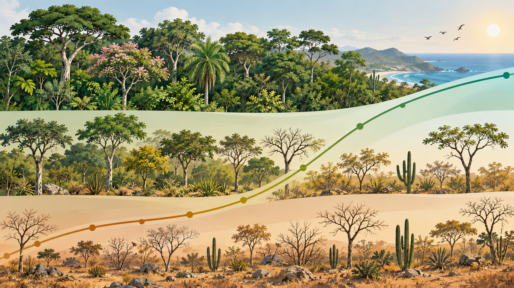
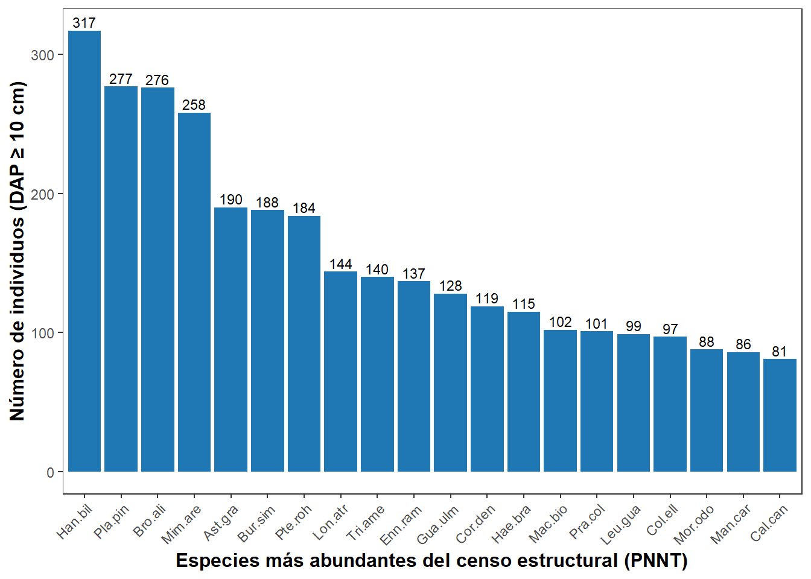
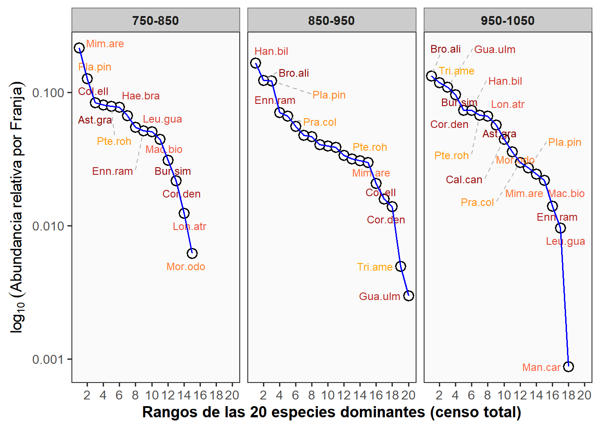
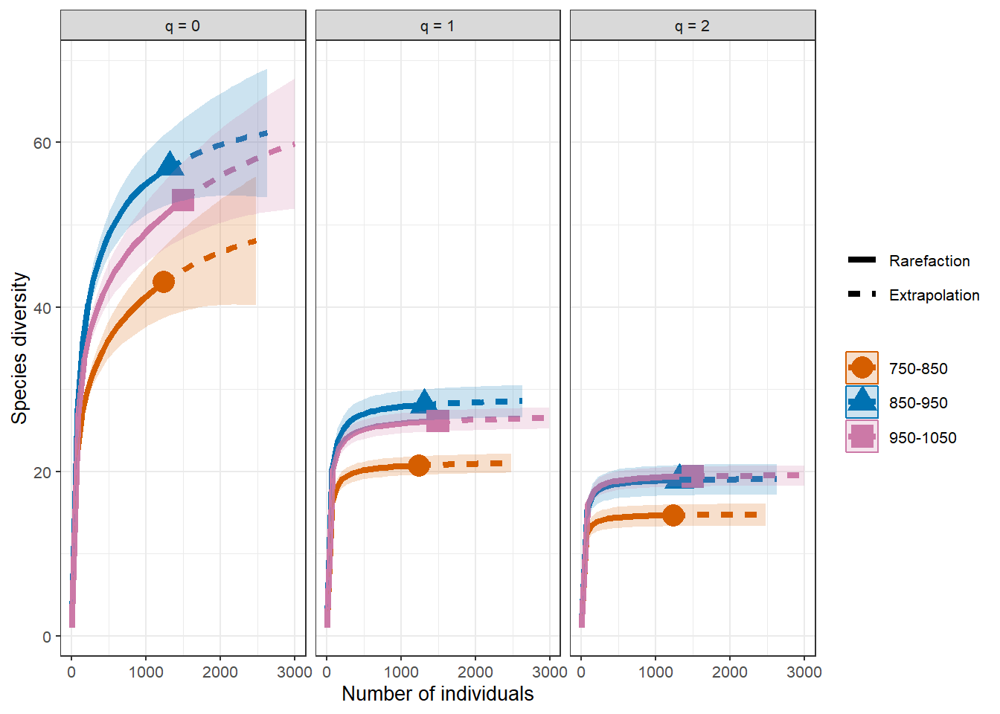
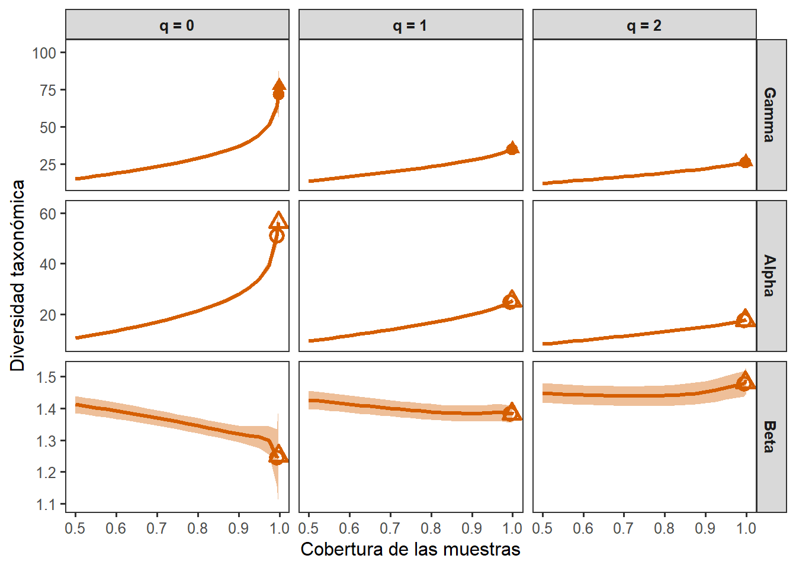
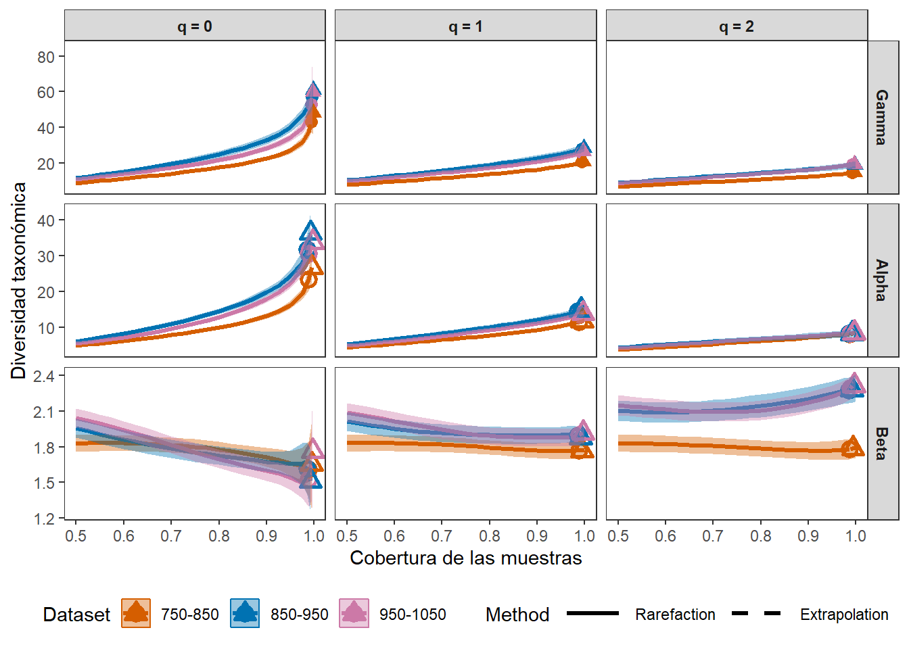
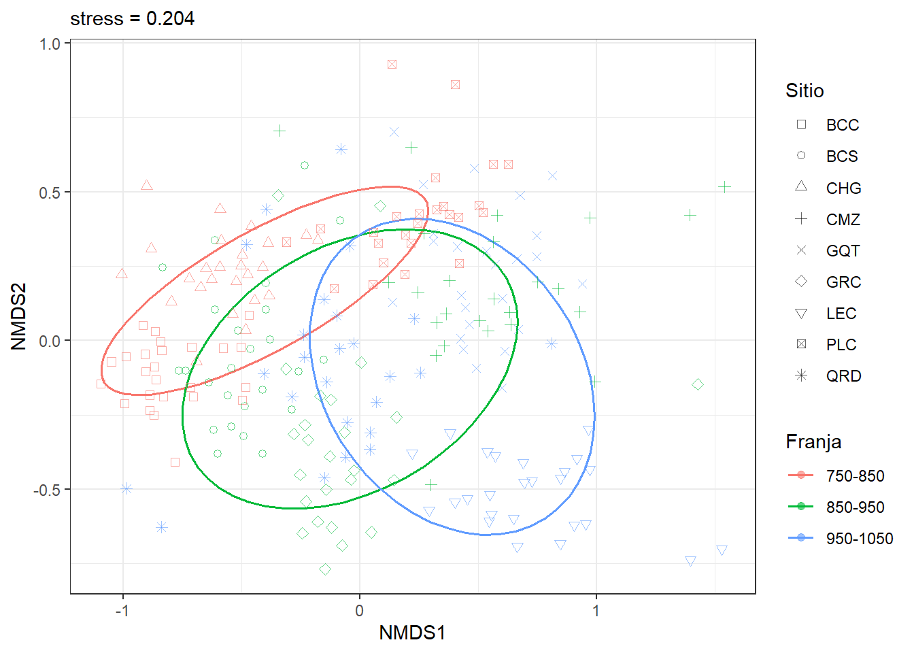
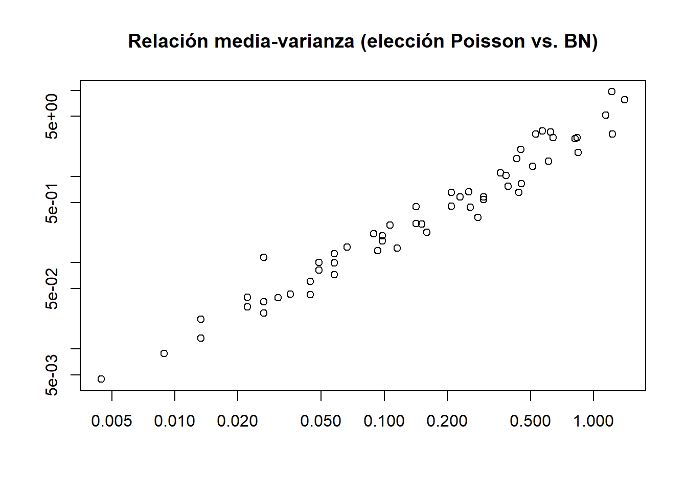

Fase 4
Diversidad taxonómica (TD) - Hill/iNEXT, partición γ-α-β, IVI/RAD, PERMANOVA anidada, SIMPER, betadisper y manyGLM
Nota sobre el análisis
Fase 4 es independiente de la Fase 3 (grupos funcionales) — se calcula sobre el censo estructural completo (Datos_estructura_PNNT.xlsx, hoja BSG, 4070 individuos con DAP ≥ 10 cm) y no usa la matriz de rasgos ni los grupos a posteriori. Confirma lo anotado al cierre de Fase 3.
Propósito
Caracterizar la diversidad taxonómica del bosque seco del PNNT a lo largo del diseño espacial Sitio anidado en Franja (9 Sitios, 3 por Franja; 225 Subparcelas, 25 por Sitio), siguiendo el marco de números de Hill (Chao et al.), partición γ-α-β, IVI/RAD clásicos, y el bloque multivariado (PERMANOVA/SIMPER/betadisper/manyGLM) del proyecto BST adaptado a un diseño espacial (no temporal) con dos niveles de anidamiento.
Paquetes
Nota sobre iNEXT.beta3D: no está en CRAN (se instala vía devtools::install_github, junto con sus dependencias iNEXT.3D, phyclust y tidytree) — igual que en datos_Osorio_2026.qmd y 7_div_tax.qmd. El esquema visual de esta Fase 4 (barras de abundancia acumulada, RAD con etiquetas y paleta naranja-roja, y las curvas γ-α-β por cobertura) replica el usado en esos dos scripts de referencia del grupo (Anvidea cap. 7 / Osorio RBT).
Lectura, limpieza y auditoría de diseño
Hallazgos de auditoría (no bloquean el análisis, se documentan):
- 73 nombres de especie únicos tras la limpieza; uno es
"Indeterminada"(1 individuo, sin identificación) y se excluye de las matrices especie × unidad (decisión estándar: no aporta información taxonómica)."Matayba sp."(15 individuos, identificado a género) se conserva como morfoespecie válida → quedan 72 unidades taxonómicas. - 16 individuos (todos en el Sitio
QRD) tenían DAP entre 9.55 y 9.87 cm, levemente bajo el umbral de inclusión de 10 cm del censo — coincide exactamente con los límites de clase diamétrica (9.55 ≈ CAP 30 cm/π; 9.87 ≈ CAP 31 cm/π), consistente con redondeo en el borde de clase y no con un error de captura. Decisión (confirmada, 12-sep-2026): se excluyen aplicando el corte estricto DAP ≥ 10.00 cm — verificado que el impacto es mínimo: ninguna especie desaparece de QRD (39 especies antes y después), solo baja de 421 a 405 individuos (−3.8 % en ese Sitio, −0.39 % del censo total), repartidos en 9 de las 25 Subparcelas, ninguna llega a cero individuos. No cambia riqueza, significancias, ni ninguna comparación entre Franjas reportada en este documento. - Diseño confirmado: 9 Sitios (3 por cada una de las 3 Franjas), con 25 Subparcelas cada uno = 225 unidades, perfectamente balanceado → el anidamiento Sitio(Franja) es totalmente viable, con la Subparcela como unidad de réplica real para el bloque multivariado.
Franja
Sitio 750-850 850-950 950-1050
BCC 481 0 0
BCS 0 540 0
CHG 438 0 0
CMZ 0 413 0
GQT 0 0 588
GRC 0 363 0
LEC 0 0 505
PLC 321 0 0
QRD 0 0 421# A tibble: 9 × 2
Sitio n
<fct> <int>
1 BCC 25
2 BCS 25
3 CHG 25
4 CMZ 25
5 GQT 25
6 GRC 25
7 LEC 25
8 PLC 25
9 QRD 25Matrices especie × unidad
IVI por Sitio
Densidad relativa (nº individuos) + dominancia relativa (área basal) + frecuencia relativa (% de subparcelas con presencia de la especie dentro de su Sitio); escala 0–300 (convención clásica de Curtis & McIntosh).
| Especie | IVI_medio | n_sitios |
|---|---|---|
| Brosimum alicastrum | 42.46 | 3 |
| Handroanthus billbergii | 26.08 | 6 |
| Mimosa arenosa | 22.15 | 6 |
| Pradosia colombiana | 21.25 | 4 |
| Bursera simaruba | 20.62 | 8 |
| Haematoxylum brasiletto | 18.62 | 4 |
| Anacardium excelsum | 18.47 | 1 |
| Platymiscium pinnatum | 17.16 | 9 |
| Pseudobombax septenatum | 16.91 | 8 |
| Pterocarpus rohrii | 16.72 | 7 |
Platymiscium pinnatum es la única especie presente en los 9 Sitios; el IVI más alto lo tiene Brosimum alicastrum (42.5, pero solo en 3 Sitios, donde domina fuertemente), seguida de Handroanthus billbergii y Mimosa arenosa (más generalistas, presentes en 6 Sitios cada una).
Abundancia general y RAD — distribución rango-abundancia
Esquema visual replicado de datos_Osorio_2026.qmd (fig-1 y fig-c7-3): barras de abundancia acumulada para las especies dominantes, y curvas RAD con puntos etiquetados en escala log10, facetadas por unidad de comparación (allí Periodo L/S; aquí Franja).


750-850 -> mejor modelo (AIC): Preemption (AIC= 237.8 )850-950 -> mejor modelo (AIC): Lognormal (AIC= 287.9 )
950-1050 -> mejor modelo (AIC): Preemption (AIC= 237.5 )Las dos franjas extremas del gradiente (750-850 y 950-1050) se ajustan mejor a un modelo de Preemption (dominancia fuerte y concentrada de pocas especies); la franja intermedia (850-950) se ajusta mejor a Log-normal (comunidad más equitativa, sin una especie que domine desproporcionadamente). Es un patrón a discutir con cautela — no necesariamente lineal a lo largo del gradiente hídrico.
Números de Hill, completitud y rarefacción/extrapolación (iNEXT)
| Assemblage | n | S.obs | SC | f1 | f2 | f3 | f4 | f5 | f6 | f7 | f8 | f9 | f10 |
|---|---|---|---|---|---|---|---|---|---|---|---|---|---|
| BCC | 481 | 22 | 0.992 | 4 | 1 | 2 | 1 | 1 | 2 | 0 | 0 | 0 | 0 |
| BCS | 540 | 24 | 0.998 | 1 | 2 | 1 | 2 | 0 | 1 | 2 | 1 | 0 | 2 |
| CHG | 438 | 21 | 0.996 | 2 | 2 | 1 | 1 | 1 | 2 | 0 | 2 | 0 | 0 |
| CMZ | 413 | 35 | 0.976 | 10 | 1 | 6 | 2 | 2 | 1 | 0 | 2 | 0 | 0 |
| GQT | 588 | 26 | 0.998 | 1 | 2 | 2 | 0 | 1 | 3 | 1 | 0 | 0 | 1 |
| GRC | 362 | 36 | 0.978 | 8 | 3 | 3 | 2 | 3 | 3 | 0 | 0 | 1 | 2 |
| LEC | 505 | 27 | 0.982 | 9 | 4 | 1 | 1 | 0 | 1 | 2 | 0 | 0 | 0 |
| PLC | 321 | 27 | 0.972 | 9 | 3 | 1 | 0 | 2 | 2 | 0 | 0 | 0 | 0 |
| QRD | 405 | 39 | 0.983 | 7 | 5 | 5 | 1 | 2 | 4 | 1 | 0 | 2 | 0 |
Rarefacción/extrapolación (q=0,1,2) por Franja
| Assemblage | n | S.obs | SC | f1 | f2 | f3 | f4 | f5 | f6 | f7 | f8 | f9 | f10 |
|---|---|---|---|---|---|---|---|---|---|---|---|---|---|
| 750-850 | 1240 | 43 | 0.994 | 8 | 4 | 1 | 1 | 3 | 2 | 1 | 1 | 0 | 0 |
| 850-950 | 1315 | 57 | 0.995 | 7 | 4 | 6 | 2 | 3 | 3 | 1 | 1 | 0 | 0 |
| 950-1050 | 1498 | 53 | 0.993 | 10 | 4 | 3 | 0 | 2 | 2 | 0 | 1 | 3 | 0 |
Rarefacción/extrapolación (q=0,1,2) por Franja

Lectura: la cobertura de muestra es muy alta en todos los Sitios y Franjas (97.2–99.8 %) — el censo captura casi toda la diversidad detectable con este esfuerzo, y las comparaciones entre unidades son legítimas (no están sesgadas por diferencias de esfuerzo de muestreo). La Franja 750-850 tiene consistentemente menor diversidad en q=0,1,2 que las otras dos, con bandas de confianza que no se solapan con 850-950; las franjas 850-950 y 950-1050 son muy similares entre sí en los tres órdenes.
| Assemblage | Diversity | Observed | Estimator | s.e. | LCL | UCL |
|---|---|---|---|---|---|---|
| 750-850 | Species richness | 43.00 | 50.99 | 13.87 | 43.00 | 78.17 |
| 750-850 | Shannon diversity | 20.73 | 21.19 | 0.61 | 19.98 | 22.39 |
| 750-850 | Simpson diversity | 14.67 | 14.84 | 0.62 | 13.61 | 16.06 |
| 850-950 | Species richness | 57.00 | 63.12 | 10.34 | 57.00 | 83.38 |
| 850-950 | Shannon diversity | 28.12 | 28.83 | 0.77 | 27.32 | 30.35 |
| 850-950 | Simpson diversity | 18.94 | 19.21 | 0.81 | 17.62 | 20.80 |
| 950-1050 | Species richness | 53.00 | 65.49 | 17.04 | 53.00 | 98.88 |
| 950-1050 | Shannon diversity | 26.14 | 26.74 | 0.71 | 25.36 | 28.12 |
| 950-1050 | Simpson diversity | 19.40 | 19.64 | 0.70 | 18.27 | 21.01 |
Partición γ-α-β con iNEXT.beta3D (estandarizada por cobertura)
Réplica del esquema de datos_Osorio_2026.qmd (sección de diversidad beta con iNEXTbeta3D()/ggiNEXTbeta3D()), adaptado de una comparación de 2 periodos (L vs. S) a nuestras 3 Franjas. A diferencia de la partición manual (más abajo, con pesos iguales sobre abundancias crudas), este método estandariza por cobertura de muestra, controlando diferencias de esfuerzo/tamaño de muestra entre unidades — es el resultado que se recomienda citar como principal.


Lectura (con intervalos de confianza por bootstrap, n=30): la β entre Franjas (q=0: 1.29 [1.14–1.43]; q=1: 1.39 [1.37–1.41]; q=2: 1.48 [1.44–1.51]) es menor que la β entre Sitios dentro de Franja en los tres órdenes — el recambio ocurre principalmente a escala de Sitio, no de Franja. Sobre la Franja 750-850: en q=2 tiene una β claramente menor (1.79 [1.70–1.87]) que 850-950 (2.30 [2.18–2.41]) y 950-1050 (2.30 [2.21–2.40]) — intervalos que no se solapan, la diferencia es sólida. En q=1 la misma tendencia aparece pero de forma marginal (1.78 [1.71–1.84] vs. 1.90 [1.83–1.97] en ambas) — los intervalos casi no se tocan. En q=0 (riqueza) los intervalos de las tres Franjas se solapan ampliamente (1.65 [1.29–2.02]; 1.51 [1.25–1.78]; 1.73 [1.42–2.05]) — no hay evidencia estadística sólida de diferencia en riqueza pura del recambio entre Sitios, a pesar de que el valor puntual sugiera un patrón. Esta gradación por orden q es un matiz importante que la partición manual (sin bootstrap) no permitía ver: la Franja seca es más homogénea internamente en la fracción dominante del ensamblaje (q=2), pero no hay evidencia firme de que lo sea en riqueza cruda (q=0).
Partición γ-α-β de números de Hill — verificación cruzada (Jost 2007 / Chao et al. 2012)
Fórmulas cerradas, ponderación igual por unidad, sin estandarizar por cobertura (a diferencia de iNEXT.beta3D arriba). Se conserva como verificación independiente — los valores de β coinciden estrechamente con los de iNEXT.beta3D en q=1 y q=2 (diferencia <0.02), y difieren algo más en q=0 por el efecto de la estandarización por cobertura sobre la riqueza.
| Franja | q | gamma | alpha | beta | N |
|---|---|---|---|---|---|
| 750-850 | 0 | 43.000 | 23.333 | 1.843 | 3 |
| 750-850 | 1 | 21.471 | 11.723 | 1.832 | 3 |
| 750-850 | 2 | 15.576 | 8.389 | 1.857 | 3 |
| 850-950 | 0 | 57.000 | 31.667 | 1.800 | 3 |
| 850-950 | 1 | 29.072 | 15.135 | 1.921 | 3 |
| 850-950 | 2 | 20.275 | 9.016 | 2.249 | 3 |
| 950-1050 | 0 | 53.000 | 30.667 | 1.728 | 3 |
| 950-1050 | 1 | 26.913 | 14.012 | 1.921 | 3 |
| 950-1050 | 2 | 20.371 | 8.865 | 2.298 | 3 |
| q | gamma | alpha | beta | N |
|---|---|---|---|---|
| 0 | 72.000 | 51.000 | 1.412 | 3 |
| 1 | 34.793 | 24.792 | 1.403 | 3 |
| 2 | 26.027 | 17.393 | 1.496 | 3 |
Lectura: en los tres órdenes q, el recambio (β) entre Sitios dentro de una misma Franja (1.73–2.30) es mayor que el recambio entre Franjas (1.40–1.49) — la mayor parte de la heterogeneidad taxonómica del PNNT ocurre a escala de Sitio, no del gradiente hídrico/edáfico grueso representado por Franja. El recambio dentro de Franja es notablemente menor en 750-850 (β q=0 = 1.79) que en las otras dos (1.80–1.92) para riqueza, y esa brecha se amplía en q=2 (1.86 vs. 2.25–2.30) — la Franja más seca no solo tiene menos especies (α y γ más bajos), sino sitios internamente más parecidos entre sí en términos de las especies dominantes. Esto es coherente con el hallazgo de betadisper más abajo.
Nota metodológica: la síntesis jerárquica (α_Sitio,regional × β_Sitio(Franja) × β_Franja) reproduce γ_total de forma aproximada, no exacta (72.2 vs. 72 para q=0), por el uso de promedios no ponderados de razones β entre Franjas de distinto tamaño interno — una propiedad conocida de la partición multiplicativa jerárquica con pesos iguales, no un error de cálculo.
PERMANOVA anidada, betadisper y SIMPER
Se separan dos preguntas para evitar pseudorreplicación: el efecto Sitio dentro de Franja se prueba con las 225 Subparcelas (permutaciones restringidas dentro de cada Franja); el efecto Franja se prueba con los 9 Sitios como unidad (evita inflar los grados de libertad de un factor que solo tiene 3 réplicas reales).
Permutation test for adonis under reduced model
Terms added sequentially (first to last)
Blocks: strata
Permutation: free
Number of permutations: 999
adonis2(formula = bray_sub ~ Sitio, data = meta_sub, permutations = 999, by = "terms", strata = meta_sub$Franja)
Df SumOfSqs R2 F Pr(>F)
Sitio 8 39.406 0.47006 23.949 0.001 ***
Residual 216 44.426 0.52994
Total 224 83.832 1.00000
---
Signif. codes: 0 '***' 0.001 '**' 0.01 '*' 0.05 '.' 0.1 ' ' 1Permutation test for adonis under reduced model
Terms added sequentially (first to last)
Permutation: free
Number of permutations: 999
adonis2(formula = bray_sitio ~ Franja, data = meta_sitio_df, permutations = 999, by = "terms")
Df SumOfSqs R2 F Pr(>F)
Franja 2 0.51193 0.22211 0.8566 0.589
Residual 6 1.79291 0.77789
Total 8 2.30484 1.00000 Analysis of Variance Table
Response: Distances
Df Sum Sq Mean Sq F value Pr(>F)
Groups 8 0.54856 0.068570 5.6371 1.67e-06 ***
Residuals 216 2.62745 0.012164
---
Signif. codes: 0 '***' 0.001 '**' 0.01 '*' 0.05 '.' 0.1 ' ' 1Analysis of Variance Table
Response: Distances
Df Sum Sq Mean Sq F value Pr(>F)
Groups 2 0.12854 0.064268 9.2228 0.000142 ***
Residuals 222 1.54698 0.006968
---
Signif. codes: 0 '***' 0.001 '**' 0.01 '*' 0.05 '.' 0.1 ' ' 1 Tukey multiple comparisons of means
95% family-wise confidence level
Fit: aov(formula = distances ~ group, data = df)
$group
diff lwr upr p adj
850-950-750-850 0.052933965 0.02076940 0.08509853 0.0003987
950-1050-750-850 0.048128568 0.01596401 0.08029313 0.0014578
950-1050-850-950 -0.004805397 -0.03696996 0.02735916 0.9338185
$`750-850_850-950`
average ratio cumsum p
Mimosa arenosa 0.07643810 0.9493911 0.08923264 0.01
Handroanthus billbergii 0.07019703 0.7769350 0.17117954 0.06
Platymiscium pinnatum 0.05891227 1.0660780 0.23995279 0.01
Brosimum alicastrum 0.05064867 0.5311439 0.29907926 0.91
Pterocarpus rohrii 0.04046434 0.6036707 0.34631669 0.44
$`750-850_950-1050`
average ratio cumsum p
Mimosa arenosa 0.07377185 0.9679189 0.08185655 0.01
Triplaris americana 0.04997470 0.6293152 0.13730800 0.01
Brosimum alicastrum 0.04909876 0.5617417 0.19178752 0.94
Handroanthus billbergii 0.04800181 0.6543706 0.24504988 1.00
Guazuma ulmifolia 0.04685902 0.5537746 0.29704421 0.01
$`850-950_950-1050`
average ratio cumsum p
Brosimum alicastrum 0.07802344 0.7636233 0.0893669 0.01
Handroanthus billbergii 0.07233336 0.8050698 0.1722165 0.02
Triplaris americana 0.04986464 0.6320621 0.2293307 0.01
Guazuma ulmifolia 0.04671384 0.5556665 0.2828360 0.01
Platymiscium pinnatum 0.04592535 0.8730906 0.3354382 0.85Lectura conjunta:
- Sitio(Franja) es muy significativo (PERMANOVA F=23.98, R²=0.47, p=0.001) — la composición varía fuertemente entre Sitios dentro de una misma Franja. Pero betadisper por Sitio también es significativo (p<0.001): parte de esa señal puede deberse a diferencias de dispersión (heterogeneidad interna), no solo de centroide — lectura estándar en ecología de comunidades, no invalida el resultado pero matiza su interpretación como “recambio puro”.
- Franja, probado correctamente a nivel de Sitio (n=9, evitando pseudorreplicación), no es significativo (F=0.86, R²=0.22, p=0.59) — con solo 3 réplicas por Franja el test tiene poca potencia. El nMDS muestra que 750-850 sí se separa visualmente de las otras dos, que se solapan bastante entre sí.
- betadisper por Franja sí es significativo (p<0.001): 750-850 tiene menor dispersión que 850-950 y 950-1050 (que no difieren entre sí, Tukey p=0.92) — señal consistente con la partición γ-α-β (menor β dentro de esa Franja). Es un hallazgo real, aunque de naturaleza distinta a un efecto de composición promedio.
- SIMPER identifica a
Mimosa arenosa,Handroanthus billbergii,Brosimum alicastrum,Platymiscium pinnatumyTriplaris americanacomo las especies que más contribuyen a la disimilitud entre Franjas — coherente con el IVI (varias de estas ya destacaban como las más importantes por Sitio).
manyGLM — Binomial Negativa (principal) y Poisson (sensibilidad)
Decisión (confirmada por la directora, 12-sep-2026): se reporta la Binomial Negativa (BN) como modelo principal, con Poisson como análisis de sensibilidad — justificado por la relación media-varianza de abajo.

Lectura de la relación media-varianza: los puntos seleccionados forman una línea razonablemente recta en escala log-log, pero por encima de la pendiente 1:1 que asumiría Poisson (varianza = media) — la varianza crece más rápido que la media a través de las 72 especies. Esto es sobredispersión clásica de conteos ecológicos (muchos ceros + unas pocas especies muy abundantes) y confirma que BN es la elección apropiada: Poisson subestimaría los errores estándar e infla artificialmente la significancia.
Analysis of Deviance Table
Model: Y ~ Franja + Sitio
Multivariate test:
Res.Df Df.diff Dev Pr(>Dev)
(Intercept) 224
Franja 222 2 1167 0.002 **
Sitio 216 8 2734 0.002 **
---
Signif. codes: 0 '***' 0.001 '**' 0.01 '*' 0.05 '.' 0.1 ' ' 1
Arguments:
Test statistics calculated assuming uncorrelated response (for faster computation)
P-value calculated using 499 iterations via PIT-trap resampling.Analysis of Deviance Table
Model: Y ~ Franja + Sitio
Multivariate test:
Res.Df Df.diff Dev Pr(>Dev)
(Intercept) 224
Franja 222 2 2764 0.002 **
Sitio 216 8 5195 0.002 **
---
Signif. codes: 0 '***' 0.001 '**' 0.01 '*' 0.05 '.' 0.1 ' ' 1
Arguments:
Test statistics calculated assuming uncorrelated response (for faster computation)
P-value calculated using 499 iterations via PIT-trap resampling.Lectura: con BN (modelo principal), tanto Franja (p=0.002) como Sitio(Franja) (p=0.002) son significativos sobre el patrón conjunto de abundancias por especie — a diferencia de la PERMANOVA de Franja (no significativa, ver sección anterior). Poisson (sensibilidad) da la misma conclusión cualitativa, pero con estadísticos de devianza más grandes (esperable: al ignorar la sobredispersión, infla la señal) — otra razón para no reportarlo como resultado principal. La diferencia con la PERMANOVA no es una contradicción: manyGLM usa las 225 Subparcelas con el modelo anidado correcto (Tipo I, mucha más potencia que n=9 Sitios), y modela abundancia media por especie (sensible a cambios de abundancia total, no solo de composición relativa como Bray-Curtis).
Nota de redacción — pendiente de tu confirmación: dos borradores de cómo presentar esta comparación PERMANOVA-vs-manyGLM en el manuscrito (uno extenso para Resultados, uno breve para nota metodológica) se compartieron aparte para tu revisión; una vez elijas o ajustes uno, se inserta aquí en la versión final.
Síntesis de Fase 4 y decisiones pendientes antes de Fase 5
Lo que queda sólido y reproducible:
- Diseño Sitio(Franja) confirmado como viable (9/3/225, perfectamente balanceado) — no fue necesario colapsar a un nivel más simple.
- Cobertura de muestra muy alta (>97 %) en todas las unidades — las comparaciones de diversidad no están sesgadas por esfuerzo de muestreo.
- Señal consistente, con matices por orden q, de que la Franja 750-850 es más homogénea internamente que las otras dos: en la fracción dominante del ensamblaje (q=2) la diferencia es sólida y triangulada por tres vías (
iNEXT.beta3Dcon IC no solapados, betadisper significativo, y menor pendiente del RAD/radfit); en riqueza cruda (q=0) el patrón es solo sugestivo (intervalos de bootstrap solapados) — no sobre-generalizar este hallazgo a todos los órdenes de diversidad. - El bloque multivariado completo (PERMANOVA nested, betadisper, SIMPER, manyGLM Poisson+BN) corrió sobre datos reales, con las 225 Subparcelas como unidad de réplica correcta.
Lo que sigue siendo una advertencia activa, no resuelta:
- La PERMANOVA de Franja no fue significativa (n=3 réplicas, poca potencia) mientras que manyGLM sí lo fue — ambos resultados son válidos pero responden preguntas distintas; hay que decidir cómo se presentan juntos en Resultados sin que parezcan contradictorios.
- La PERMANOVA de Sitio(Franja) coincide con un betadisper significativo — matizar la interpretación como composición y dispersión, no solo recambio puro.
- 16 individuos bajo el umbral de 10 cm DAP (Sitio QRD) — pendiente de decisión: mantener (como aquí) o recortar estrictamente en 10.00 cm.
Para confirmar con la directora / el equipo antes de avanzar:
- ¿Se acepta BN como modelo principal de manyGLM (Poisson como sensibilidad), dado el patrón de sobredispersión esperable en conteos ecológicos?
- ¿Cómo se prefiere presentar la discrepancia PERMANOVA-Franja (n.s.) vs. manyGLM-Franja (p=0.002) en el manuscrito — como matiz metodológico explícito, o priorizando una de las dos pruebas como resultado “oficial”?
- ¿Se mantienen los 16 individuos de QRD bajo el umbral de 10 cm, o se recortan estrictamente?
Qué hereda Fase 5: la matriz especie × Sitio y especie × Subparcela de aquí son insumo directo para repetir este mismo marco (Hill/iNEXT, partición γ-α-β) con la matriz de distancia funcional (Gower, Fase 3), para comparación directa TD vs. FD.